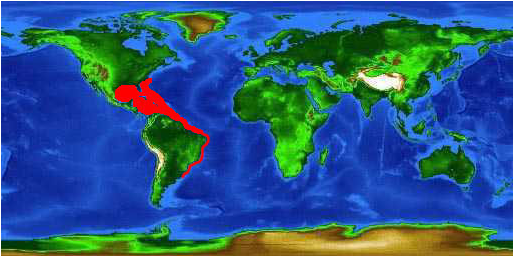
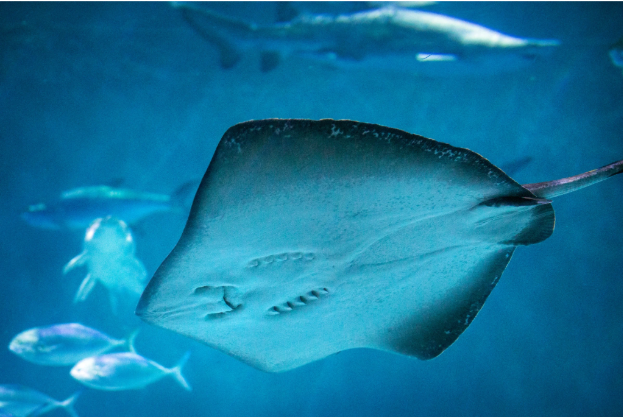
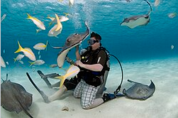

Common Name: Southern Stingray (Hypanus americanus) Status: Near Threatened
Scientific Classification
| Kingdom: | Animalia |
|---|---|
| Phylum: | Chordata |
| Class: | Chondrichthyes |
| Subclass: | Elasmobranchii |
| Order: | Myliobatiformes |
| Family: | Dasyatidae |
| Genus: | Hypanus |
| Species: | H. americanus |
Size Range/Identification
The southern stingray can reach a disk width of 79 inches and weight of 214 lbs. The pectoral fins form a flat disc that goes on from the anterior to the head and posterior to the pelvic region. The disc is diamond shaped, which makes it more angular than the discs of other rays. Their dorsal coloration varies from dark gray, green, and brown.2
Habitat/Geology
The southern stingray, like other rays, prefer shallow coastal or estuarine habitats with sand/slit bottoms. They’ve been observed in depths to 180 feet. They’re mostly located in tropical and subtropical waters of the southern Atlantic Ocean, the Caribbean, and the Gulf of Mexico. They’re most abundant near Florida and the Bahamas.2

Ecology/Behavior
Southern stingrays feed constantly throughout the day and night. They eat large epibenthic prey like teleosts and crustaceans. Others include stomatopods, mollusks, and annelids. Predators include multiple species of sharks and large fishes. Males become sexually mature at 20 inches, females at 29.5-31.5 inches. Their life and breeding cycles are still being studied but their development occurs through aplacental viviparity. Gestation takes 4-11 months and litter sizes can range from 2-10 pups.2 To communicate with each other, they rely on touch and pheromones, usually during mating and reproduction.3


References
- Wikipedia: Southern Stingray
Southern stingray. (2020, December 14). Wikipedia. https://en.wikipedia.org/wiki/Southern_stingray
- Southern Stingray - Florida Museum of Natural History
Florida Museum of Natural History. (2023). Southern Stingray. Florida Museum of Natural History. https://www.floridamuseum.ufl.edu/discover-fish/species-profiles/southern-stingray/
- Animal Diversity Web: Southern Stingray
Mulheisen, M., & Csomos, R. A. (2014). Dasyatis americana (southern stingray). Animal Diversity Web. https://animaldiversity.org/accounts/Dasyatis_americana/
- Sea Wonder: Southern Stingray - Marine Sanctuary
Marine Sanctuary. (2023). Sea Wonder: Southern Stingray. Marine Sanctuary. https://marinesanctuary.org/blog/sea-wonder-southern-stingray/
- Southern Stingray - Audubon Nature Institute
Audubon Nature Institute. (2023). Southern Stingray. Audubon Nature Institute. https://audubonnatureinstitute.org/southern-stingray